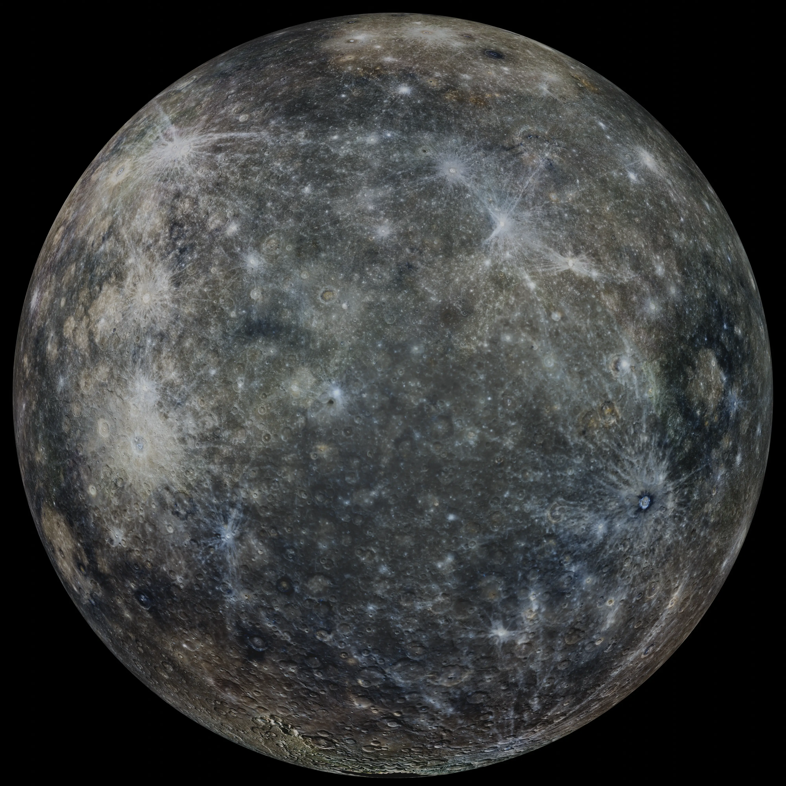

Mercury
Merkurius merupakan planet dalam sekaligus objek terestrial terkecil di Tata Surya dengan orbit yang memiliki eksentrisitas tertinggi kedua setelah Pluto (jika dikategorikan). Terletak pada jarak perihelion hanya 0.307 AU, planet ini terkunci dalam resonansi putar-orbit (spin-orbit) 3:2 yang unik, di mana ia berotasi pada porosnya tepat tiga kali untuk setiap dua kali periode revolusi mengelilingi Matahari. Absennya atmosfer global yang masif digantikan oleh eksosfer dinamis yang super tipis akibat tekanan angin surya, menyebabkan fluktuasi termal permukaan paling ekstrem di antara planet lainnya. Secara geologis, permukaannya didominasi oleh kawah tumbukan purba bercampur dataran lava halus, serta jaringan sesar sungkup raksasa (rupes) yang menjadi bukti struktural bahwa planet ini mengalami global contraction (penyusutan volume) seiring mendinginnya bagian inti besi interior selama miliaran tahun. Jaringan magnetosfer internalnya yang lemah namun aktif mengindikasikan adanya konveksi fluida pada bagian inti luar logamnya.